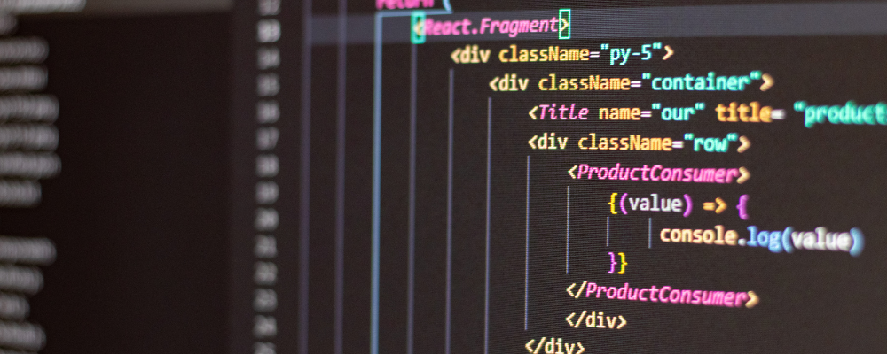

The Fashion Part of Website - Front End
Written by Simranjit Singh on Friday, July 29th 2022
Website development is a fastest growing industry and lot of students aspire to become website developer. Website & App development consist of Front End and Back End.
In this post, i will focus on Front End. We will learn what Front End is all about, and why you too should learn it.
What is Front End?
Front End is a part that user interacts with.It is the screen that you browse and give input to perform a specific action. For example You want to search for Product Pen Drive. You open a website and type Pen Drive in search box. This box is a part of Front End.
Front End consists of elements that describe different types of content: text, images, audio, videos, forms and navigational links.
There are 3 core languages in which we design Front End
- HTML
- CSS
- Javascript
You can learn more at Wikipedia.
Why should you learn Front End?
There are many reasons for learning the fundamental language of the front end web development.Here are 5 of them:
- To be a part of wonderful designer community.
- To avoid using limited template based designs.
- To build web applications
- To become Financially independent.
- To have fun.
Hopefully this has cleared your doubts about Front End. See you next time!